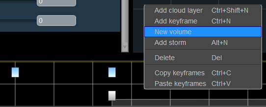

Cloud Volumes¶
Cloud volumes allow you to place specific formations of clouds in the sky. These volumes can be customised just like any other clouds, and multiple can be created, allowing you to create your own skylines!
How to create a Volume¶
To create a volume, simply right click within the cloud layer and select “Add new Volume”
This will turn this layer into a volume layer, meaning this layer will only use volumes, not a repeating skyline. If you still want a repeating sky as well, simply create another layer.
How to modify the Volume type and fill properties¶
After creating a volume, you can modify its properties from the Properties window, when that cloud layer is selected. Under the Volumes section, you can add a volume with New Volume, delete selected volumes with Delete Volume and update selected volumes with Update Volume, based on the type and fill properties specified by the Type and Fill Type drop-down menus. Finally, there is a list of UIDs that relate to the volumes present in the layer, which you can select and modify.
Volume fill properties¶
Volumes have a property that dictates whether the volume fill - ‘add-in’ or cull - ‘remove’ cloud from the cloud layer. This feature could be used to create the ‘eye of the storm’ for example. The filling and culling operations are applied in the order the volumes are listed from top to bottom.
Editing Volumes¶
There are two modes of editing in the Cloud Window - Keyframe and Volume. Double click to switch between the editing modes. In Keyframe mode, you can drag the whole layer around, along with any volumes in that layer. The positions you move volumes to in keyframe mode are relative to the keyframe you have selected.
In volume edit mode, you can move volumes individually and adjust their radius.
In Volume edit mode, you can individually move and adjust each volume in your layer. You must have a volume present to enter Volume Edit mode. To move them, click and drag from the volume centre. You should see the change in your scene as you move it.
Think of the sequencer as an animation track. You select your keyframe, then adjust the values for that time(for example, the position of a volume). Next, create a new keyframe, select it, and adjust values for that time. Now, the values will seamlessly interpolate between each other as time passes.
Currently, we can create cylindrical shapes. The size of these cylinders can be altered through the Cloud Window by extending the bounds of the upper and lower faces. Grab the right handle to adjust the upper face of the cylinder, or the left handle for the lower face.
If you want to adjust the base height of the volume, use the Cloudbase in the Cloud keyframe settings. This means all clouds in one layer start at the same height. Add volumes multiple layers if you want alternate heights.
Examples¶
The new cloud volume system can be used to create small, specifically shaped clouds, or large formations of clouds that are bounded to an area. You can even mix them together! Here are just a few examples of what can now be done! Email us with your examples if you would like to be featured!